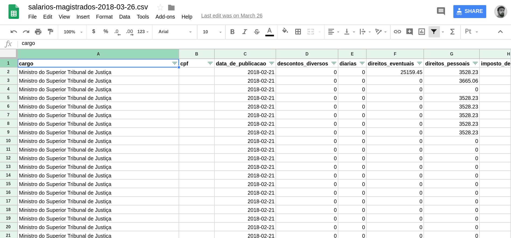
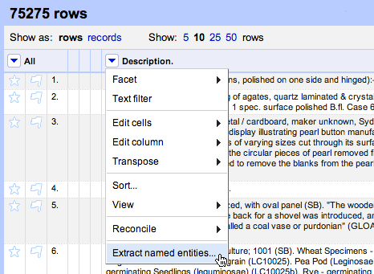
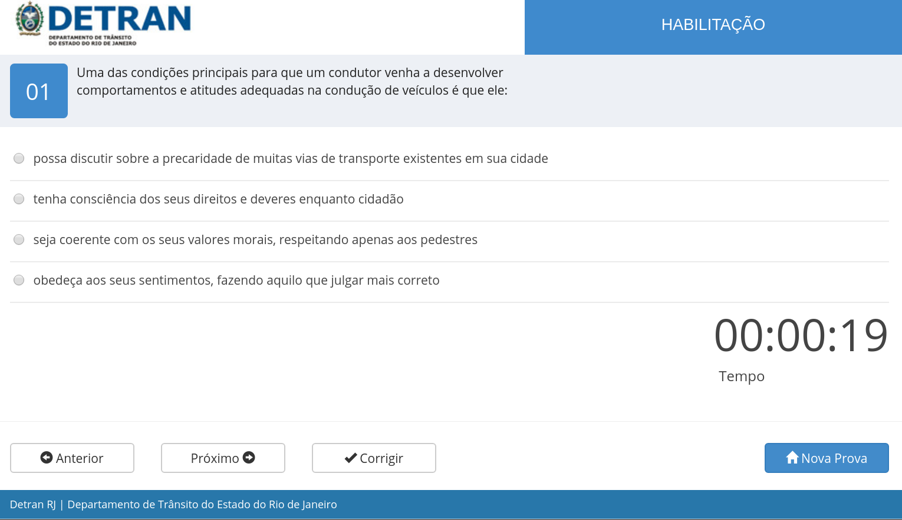

Jornalismo de Dados
Turicas aka Álvaro Justen
Semana Acadêmica de Comunicação Social UFPR 2018
17 de abril de 2018 - Curitiba/PR

$ whoami
Turicas, prazer! =)
Sigam-me os bons:
{twitter,
github,
youtube,
slideshare,
instagram}
/turicas
turicas@pythonic.cafe
Blog: turicas.info
bit.ly/ddj-sacs-2018

escoladedados.org

impacto.jor.br


pythonic.cafe
youtube.com/c/PythonicCafe
Software Livre & Python
Desde 2004/2005


“ Data-driven journalism, often shortened to "ddj", is a term in use since 2009, to describe a journalistic process based on analyzing and filtering large data sets for the purpose of creating a news story. ”-- Wikipedia )
Data Pipeline

schoolofdata.org/methodology
Dados?

generonumero.media

Veja a Edição "Mulheres na Política"

Veja a Edição "Mulheres na Política II"

Veja a Edição "Espaço Público"
Rua: substantivo (ainda) masculino

youtu.be/7yQ8U2tFFq4

apublica.org

Acesse a matéria

correio24horas.com.br

Acesse a matéria

theintercept.com/brasil

Acesse a matéria

Acesse a matéria

Acesse a matéria

Acesse a matéria
Google Spreadsheets
Open Refine
Tableau

Automação

github/turicas/rows
rows convert arquivo.pdf arquivo.csv


xkcd.com/353
Curso Gratuito (3.000+ alunos)
Knight Center, Universidade do Texas

Python Paraná
Coding Dojo (quase) toda semana!

t.me/python_pr
“ Dados abertos são dados que podem ser livremente usados, reutilizados e redistribuídos por qualquer pessoa - sujeitos, no máximo, à exigência de atribuição da fonte e compartilhamento pelas mesmas regras. ”-- OpenData Handbook (definição de Open Definition)
Problema: Acessibilidade dos Dados
Maior parte do tempo dos projetos de análise de dados:

Trabalhando com Dados Públicos


“ O nível de acessibilidade de um dado é um filtro sobre quem conseguirá utilizá-lo. ”

twitter.com/turicas/status/943176715672711168

twitter.com/turicas/status/959120200976224262

twitter.com/turicas/status/960678777096425472
Operação Serenata de Amor

serenata.ai
Brasil.IO
Dados abertos por um Brasil mais democrático
brasil.io/api/datasets
github/turicas/brasil.io
caipyra.python.org.br

Ano que vem em Curitiba!
pythonsul.org
https://2018.pythonbrasil.org.br/

coda.escoladedados.org
Cerveja com Dados
28 de maio em Curitiba/PR